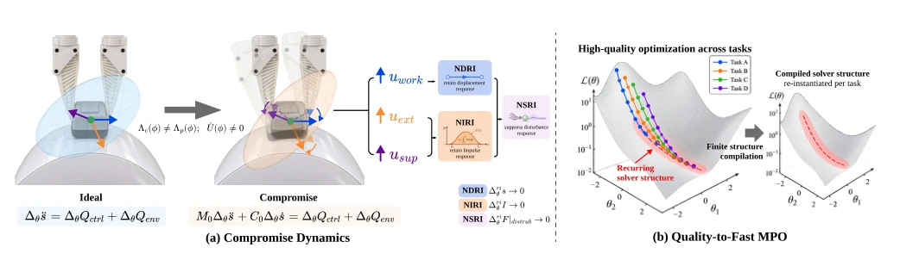
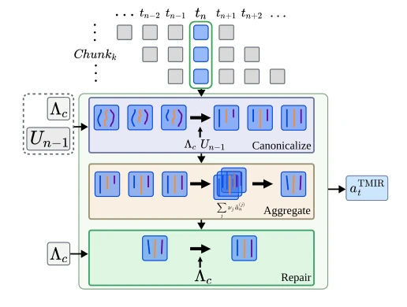
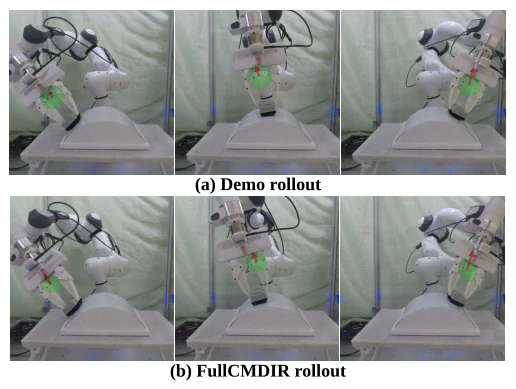
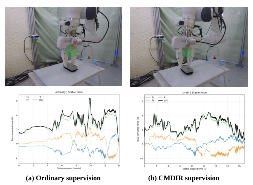

This paper attempts to extend MDIR from point-wise to continuous field, which sounds appealing, as continuous control aligns better with physical intuition. However, continuous optimization is often a pitfall; the authors employ 'compromise dynamics' to withstand the coupling of physical inertia and coordinate transformation, and implement a 'Quality-to-Fast' solver compilation for acceleration. Experiments demonstrate stability superior to discrete MDIR, with improved task retention rates and reduced force fluctuations, though real-world robot completion is not perfect. This method indeed shows promise in contact-rich tasks, but relies on source environment matching, raising doubts about generalization. One should not expect it to solve all contact problems, as it falters when the environment changes. Although FastMPO offers significant speedup, the solver structure compilation depends on the development path, potentially requiring recalculation for different tasks. Overall, this represents a solid attempt in the field of contact control; while it has not fully resolved the generalization challenge, it at least renders continuous impedance redirection feasible.
Contact-rich manipulation requires balancing task advancement with contact maintenance. High impedance amplifies transients, while low gain weakens support. MDIR [1] addresses point-wise trade-offs, but extending to continuous fields causes response coupling due to basis vector transport and metric mismatch. Existing methods either fix impedance or perform point-wise optimization, lacking structured supervision in continuous fields. This paper aims to construct a continuous controller field that preserves task response while suppressing excessive interaction, providing structured supervision for imitation learning. Specifically, continuous fields must handle basis vector transport, parameter rates, and overlapping responses between samples, whereas MDIR's point-wise method cannot directly query policy rates. Furthermore, control/physics metric mismatch couples responses even under orthogonal task coordinates, rendering direct interpolation ineffective. Thus, a continuous redirection framework is needed to balance model details with source evidence, while offering a learnable structured supervision interface for downstream imitation learning.
Overall flow: Source demonstrations generate a continuous TMIR field, optimized via C-MPO, and finally solved using a Quality-to-Fast compiled solver. Core innovations: 1. TMIR defines a continuous task manifold, encompassing work, force, and support axes, parameterized based on normalized time using a B-spline field. 2. Compromise dynamics preserves first-order effects of projected physical inertia and moving basis vector transport while canceling zero-order terms, defining displacement, impulse, and disturbance sensitivity constraints to ensure task retention. 3. C-MPO minimizes total cost, incorporating stiffness, damping, stability, and hazard event constraints, utilizing the Augmented Lagrangian method. 4. Quality-to-Fast offline compiles the solver structure for online instantiation, accelerating 5.8-9.4 times, ensuring multi-resolution evaluation and reusing development path signatures. 5. Downstream IL uses MetricReg to aggregate predictions, normalizing axes and correcting scalars, supporting ACT/TRACT policy learning. TMIR provides structured variable impedance supervision, reducing force fluctuations.
Tested on bending wipe, planar wipe, and pushing box tasks. 225 redirection trials showed the M5 scheme (CMDIR+FastMPO) performed best, with improved task performance and reduced force fluctuation. In downstream IL experiments, under CMDIR supervision, successful execution force fluctuation and peaks were lower, though real robot completion rates were inferior to normal supervision. Ablation studies indicate compromise dynamics outperforms ideal dynamics, while FastMPO maintains performance with significant speedup. Specifically, M5 increased the task performance in bending wipe from 0.696 to 0.847, reducing force fluctuation by 25%. FastMPO reduced solution time by 7.8 times. In the IL portion, CMDIR supervision achieved a 29/30 success rate in simulated bending wipe, with a force peak of 7.83N lower than the 11.64N of normal supervision. Real planar wipe success rate was 6/10, with force fluctuation of 0.29N lower than 0.34N.
其他图片Other Figures

Fig. 2. Schematic illustration of Compromise dynamics and Quality-to-Fast numerical design. (a) Compromise dynamics propagates retained responses with projected physical inertia and moving-frame transport. (b) Quality-to-Fast abstracts accepted development paths into solver-structure signatures, compiles a reusable structure within a finite search space, and recomputes all numerical updates for each new demonstration. The paths are illustrative; compilation uses three development demonstrations.

Fig. 3. MetricReg canonicalizes, aggregates, and repairs overlapping predic- tions into one executable structured action.

Fig. 4. Representative curved-wiping rollout at matched task progress. Top: source demonstration; bottom: Full CMDIR. Red arrows denote measured contact force and green ellipsoids visualize the local impedance geometry.

Fig. 5. Representative successful real planar-wiping rollouts under (a) ordinary and (b) CMDIR supervision, with force components and mag- nitude during the wiping stage.